Путеводитель по Борисову
Собор Воскресония Христова (Воскресенский собор)
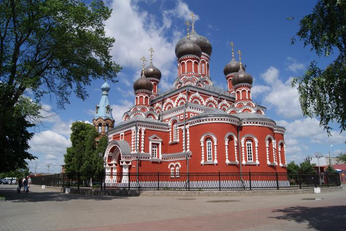
Адрес: Борисов, ул. Серебренникова, 1В
Храм святого благоверного князя Димитрия Донского города Борисова
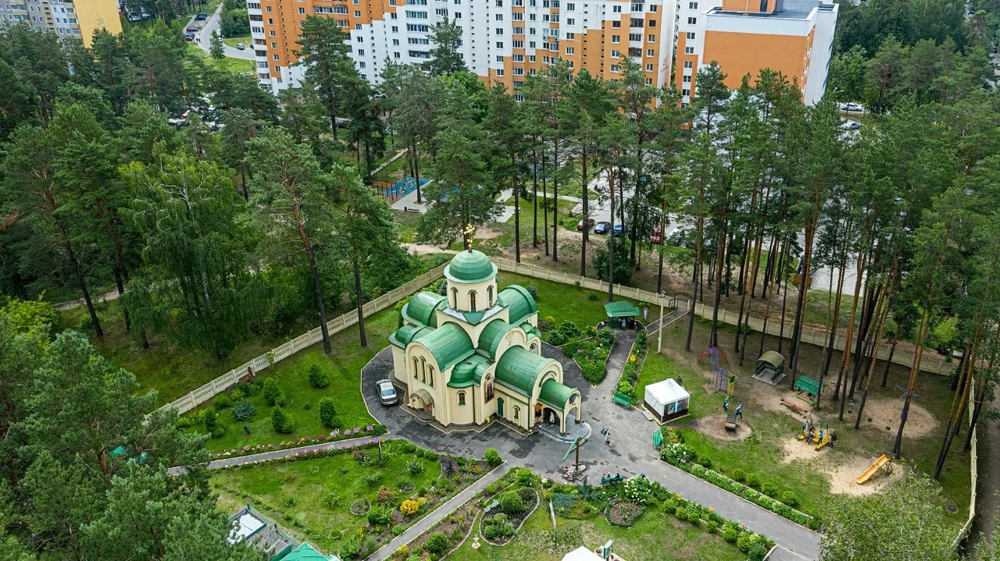
Адрес: Борисов, ул. Лопатина, 30
Церковь в честь Рождества Христова
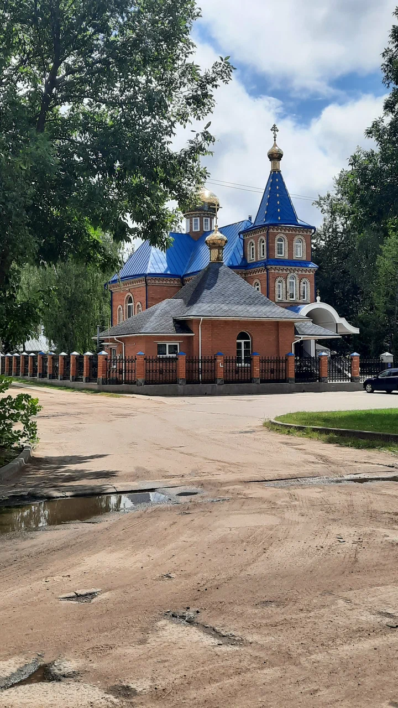
Адрес: Борисов, ул. Заслонова, 29Б
Костёл Рождества Пресвятой Девы Марии
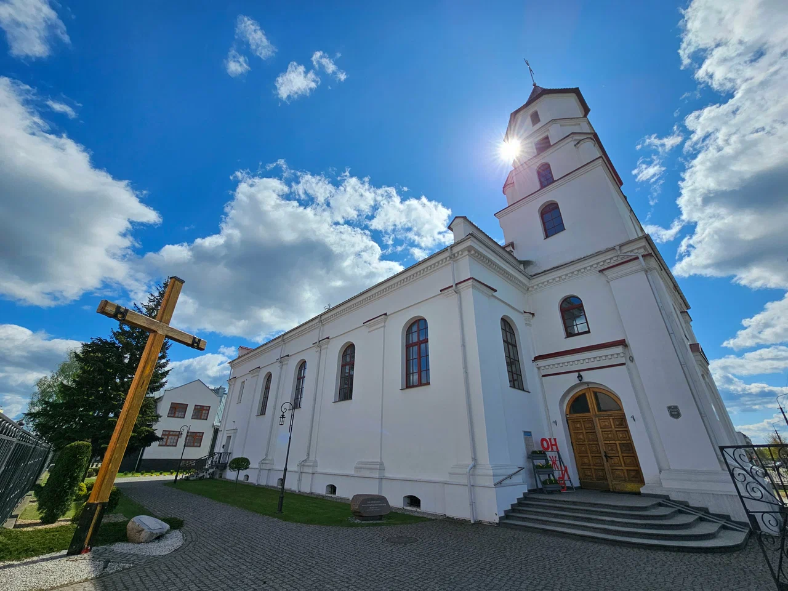
Адрес: Борисов, ул. 3-го Интернационала, 28
Костёл Cошествия Cвятого Духа
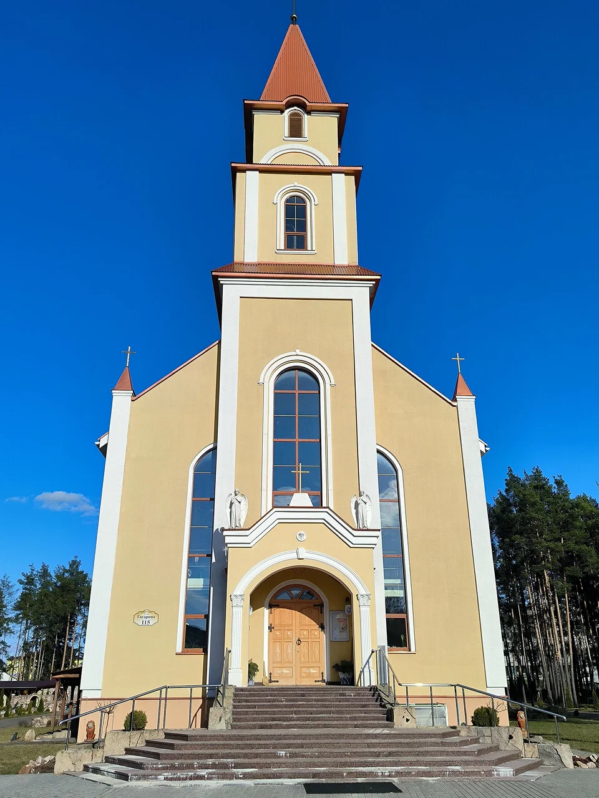
Адрес: Борисов, ул. Гагарина, 115
Вокзал
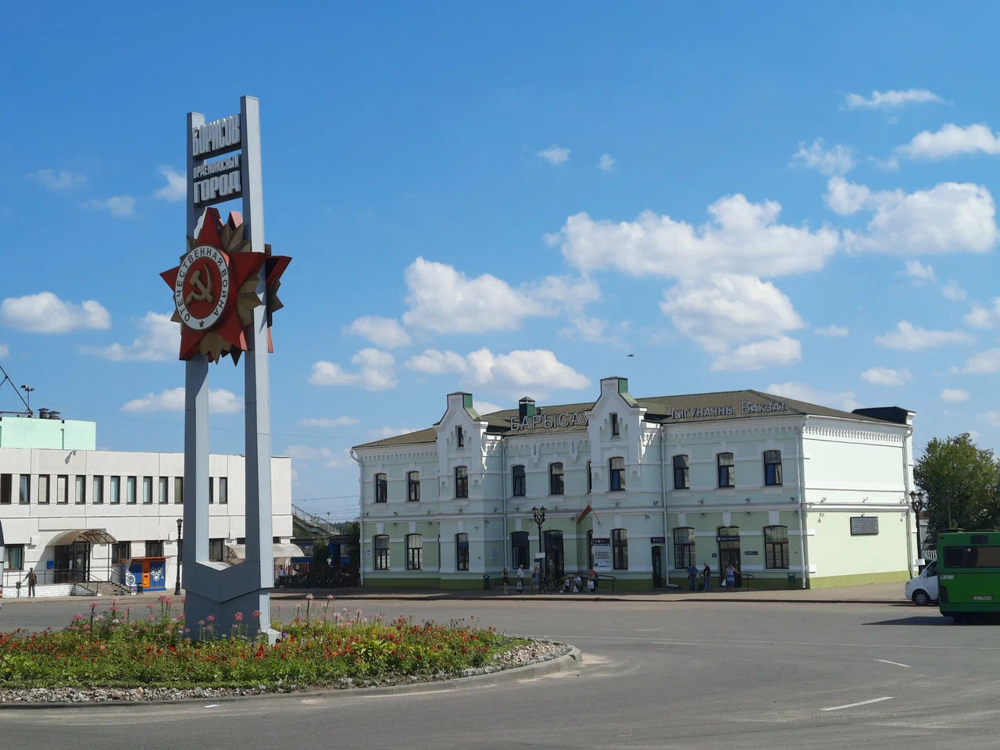
Адрес: Борисов, ул. Труда, 7А
Памятник Князю Борису
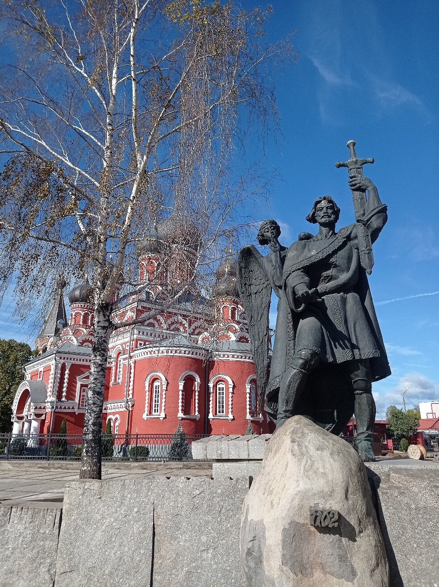
Адрес: Борисов, Соборная площадь(площадь 900-летия Борисова)
Водонапорная башня инженера Шухова
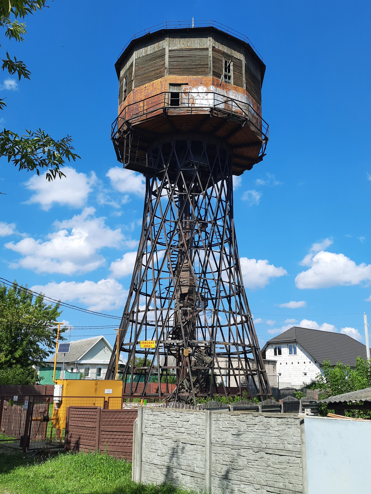
Адрес: Борисов, пересечение ул. Гастелло и ул. Энгельса
Борисовский объединенный музей
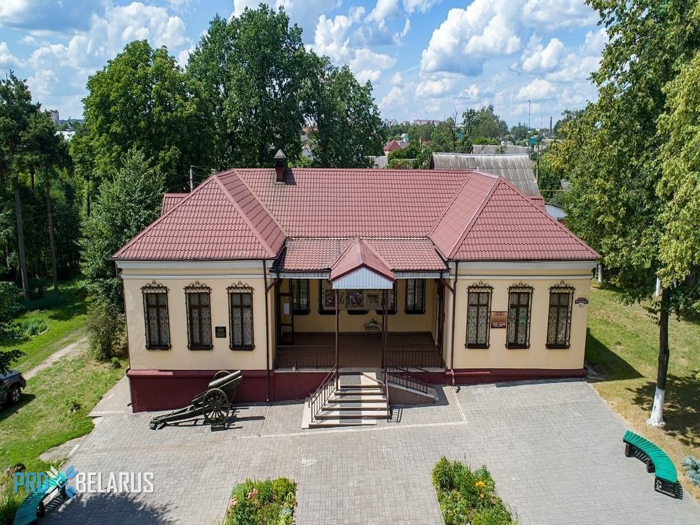
Адрес: Борисов, пр. Революции, 67
Стадион «Борисов-Арена»
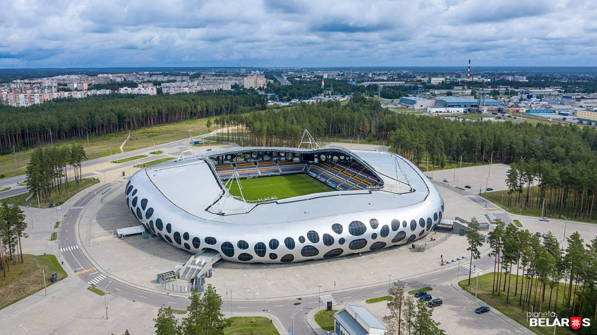
Адрес: Борисов, ул. Гагарина, 119
Руины Борисовского замка
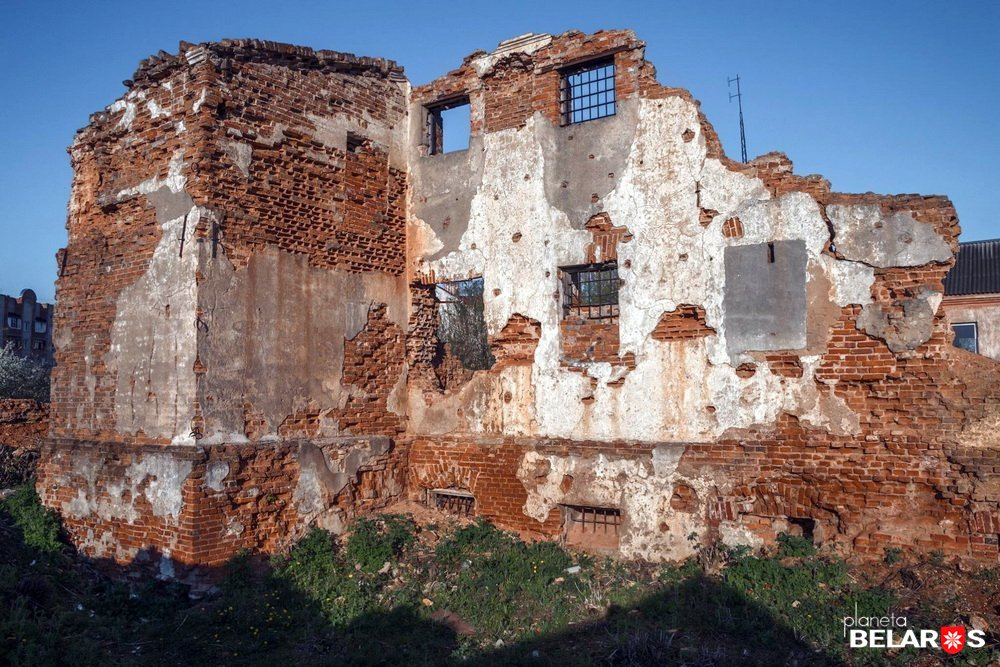
Адрес: Борисов, ул. Лопатина, 2А/p>
Мемориал «Брилевское поле»
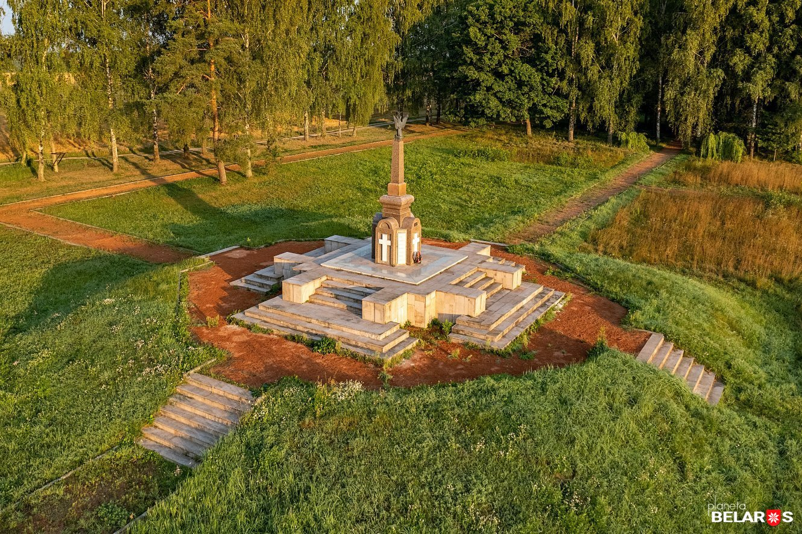
Адрес: 7 км от Борисова/p>
Музей-усадьба И. Х. Колодеева
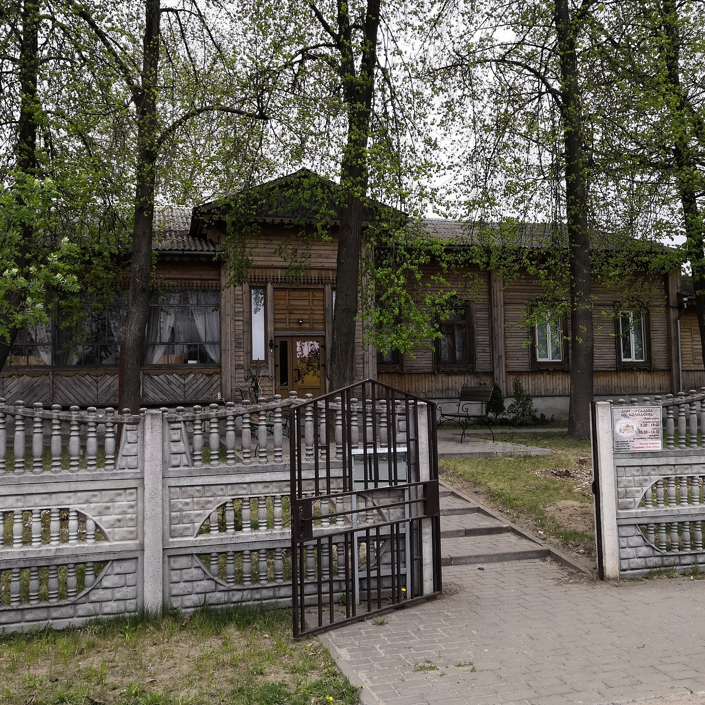
Адрес: Борисов,ул. 30 лет ВЛКСМ, 8/p>